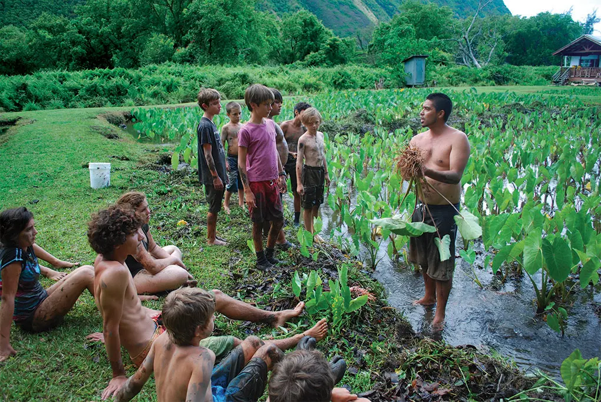
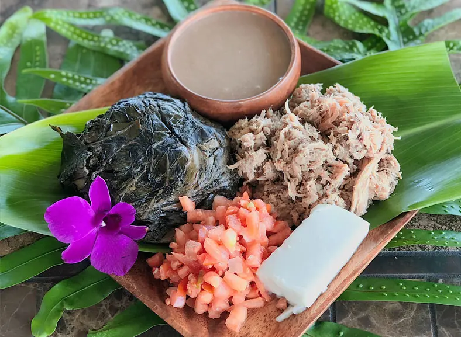

Culture & Traditions
Learn about Hawaiian values, language, traditions, and the importance of cultural respect.
Learn MoreBeyond the beaches. Discover the culture, traditions, and stories that connect us to the island.
Explore OahuOahu is more than beautiful beaches and scenic landscapes. It is an island rich in Hawaiian history, traditions, community, and cultural identity.
Rooted in Oahu invites you to experience the island with curiosity, respect, and appreciation for the people and traditions that make it special.

Learn about Hawaiian values, language, traditions, and the importance of cultural respect.
Learn MoreDiscover the significance of the land and the relationship between nature, culture, and community.
Explore Places
Explore foods and meaningful experiences that reflect the island's diverse communities.
Discover MoreMeaningful travel begins with understanding. Learn about local customs, support community businesses, and approach Hawaiian culture with respect and an open mind.
Discover Hawaiian Culture